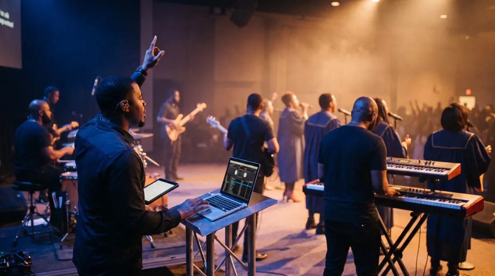

PerformLive
PerformLiveOpen Beta · free for 30 days
PerformLive
Your stems, under your fingers, with the mix untouched.
PerformLive is a multitrack playback and stem performance instrument for the stage. Mute a layer in the middle of a song, switch sections on the bar and hold a pad between moments, while the mix your producer built plays untouched underneath.
Version 0.5.0 · Windows, and Mac on Apple silicon and Intel · free for thirty days from the day you claim your key

The Third Option for Playing With Tracks
Anyone who performs with backing tracks knows the choice. You can run a full DAW on stage, which is powerful but easy to break with one wrong click. Or you can play a stereo bounce, which is safe but cannot change its mind when the moment changes. PerformLive sits between them.
You load the stems your producer exported and lay them out on decks. On stage every stem can be muted or brought back while it plays, sections switch exactly on the bar, and twelve pads hold the room when a prayer runs long. Nothing is warped, trimmed or faded, so what you exported is exactly what the room hears.

Stems
Drop the Drums, Keep the Pad
Every stem can be muted on its own while the song plays. A breakdown, an a cappella chorus or a moment of just the keys becomes a decision you make live, instead of a separate bounce you had to prepare the week before.

Cues That Land on the Bar
Trigger a row while another is playing and the switch waits for the next bar. Transitions arrive musically, not whenever your finger happened to land.
Scenes recall the row, the stems, the tempo and the pads together, so a whole song is one tap and set changes stop being a scramble.

Pads
Hold the Room
Twelve colour coded pads sit under your fingers for atmosphere and one-shots. Tap to start and tap to stop, and each one glows for as long as it sounds. When a prayer runs long or the pastor keeps going, the room never falls silent.


Editing
A Real Grid When You Need One
The editor snaps to the bar, 1/2, 1/4, 1/8, 1/16 or 1/32, with start and end markers and up to 64x zoom. Snapping always follows the grid you can actually see.
From Stems to Stage in Four Steps
Drag your stems in from anywhere and PerformLive detects the tempo as they arrive. Drop them onto decks, then name and colour your rows. Capture each song as a scene. Then on stage, recall, trigger, mute and hold.
Around the Instrument

Library
Stems tagged with tempo and key, and searchable.

Mixer
A fader for every channel, with its own output routing for multi-output interfaces.

Settings
Audio device, buffer, and MIDI Learn for rows, pads and effects.

Store
A built-in store, ready for loop and stem packs from the Amanorsac Store.
Why Not Just Use a DAW?
DAWs are excellent tools built for a different job. This is about what fits a stage, not about quality.
| PerformLive | A DAW on stage | A stereo track | |
|---|---|---|---|
| Per-stem control live | Core function | Possible, buried | Impossible |
| Designed for touch | Every control | Mouse first | Trivially |
| Risk of a wrong touch | Low by design | High | Low |
| Changes audio by default | Never | Often | Never |
| A volunteer can run it | Yes | Rarely | Yes |
| Cues on the bar | Yes | Yes | No |
| Time to learn | Minutes | Weeks | Minutes |
Built to Be Trusted on a Sunday
PerformLive reads your files and never modifies them. There is no warping, trimming, fading or normalizing on load, and time stretching only happens when you ask for it. The build makes no network requests during a service, so nothing phones home mid-set. Autosave runs every minute, and if the computer crashes the next launch offers you the recovered session. Row triggers, pads and effects can all be bound to a MIDI controller or a foot pedal.
Tech Specs
Platforms
Windows (installer). macOS, Apple silicon and Intel (installer package).
Audio Files
WAV, AIFF, FLAC, MP3 and OGG. Read only, never modified.
Decks and Scenes
Four decks of stems. Scenes recall row, stems, tempo and pads together.
Cues
Row switches quantised to the next bar.
Pads
Twelve colour coded pads for atmosphere and one-shots, lit while sounding.
Editor
Grid at bar, 1/2, 1/4, 1/8, 1/16 and 1/32. Start and end markers. Up to 64x zoom.
Tempo
Detected on import and shown, never imposed. Time stretch only with a row tempo or LOCK.
Outputs
Per channel output routing for multi-output interfaces.
Control
Touch first. Mouse and keyboard. MIDI Learn for rows, pads and effects, including foot pedals.
Safety
Autosave every minute with crash recovery. No network requests from the shipping build.
Beta Licence
Free for 30 days from the day you claim your key, through Amanorsac Hub.
Questions
Is this a DAW?
Will it change my audio files?
What formats does it read?
Does it work with a touchscreen?
Can I use a MIDI controller or foot pedal?
Can I send different stems to different outputs?
What happens if it crashes mid-set?
Is there a Mac version?
PerformLive
Free for 30 days
The open beta installs through Amanorsac Hub on Windows and Mac. Your thirty days start the day you claim your key, not today. Tell us how it goes on your stage.